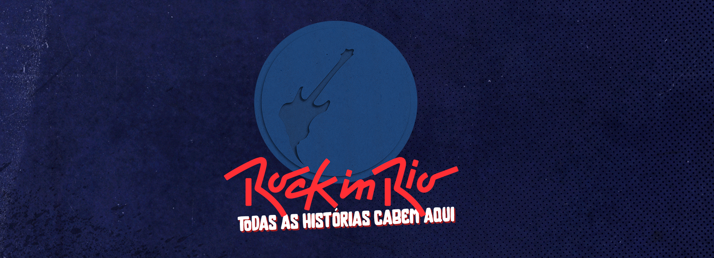

Rock in Rio Brasil,mais que um festival um marco na história nacional!

A importância do Rock in Rio vai além da música. O festival é um evento de impacto em diversas frentes.
A Importância do Rock in Rio Brasil
O festival foi um sucesso estrondoso de público, atraindo mais de 1,4 milhão de pessoas ao longo dos dez dias, um número que o colocou entre os maiores eventos musicais do mundo. A transmissão televisiva para todo o país e para outros lugares do globo amplificou ainda mais seu impacto.
Cultura: O Rock in Rio transformou a relação do Brasil com a música internacional. Antes do festival, era raro ver grandes turnês de artistas estrangeiros no país. O sucesso do evento abriu as portas para que o Brasil se tornasse um destino obrigatório no calendário de shows mundiais. Ele também se consolidou como uma plataforma de diversidade musical, apresentando do rock ao pop, do hip-hop ao funk, em seus diferentes palcos.
Econômica: O festival movimenta bilhões de reais na economia do Rio de Janeiro a cada edição, gerando empregos temporários e impulsionando o turismo, a hotelaria e o setor de transportes.
Social e Ambiental Desde sua primeira edição, o Rock in Rio tem uma forte vertente social. O lema "Por um mundo melhor" impulsiona ações de sustentabilidade, como programas de reciclagem e compensação de carbono, além de apoiar causas sociais. O festival, inclusive, foi reconhecido como Patrimônio Cultural Imaterial do Rio de Janeiro, um testemunho de seu profundo impacto na cidade e na história do país.
Música inédita gravada por mais de 53 artistas em prol de um Brasil melhor para todos.